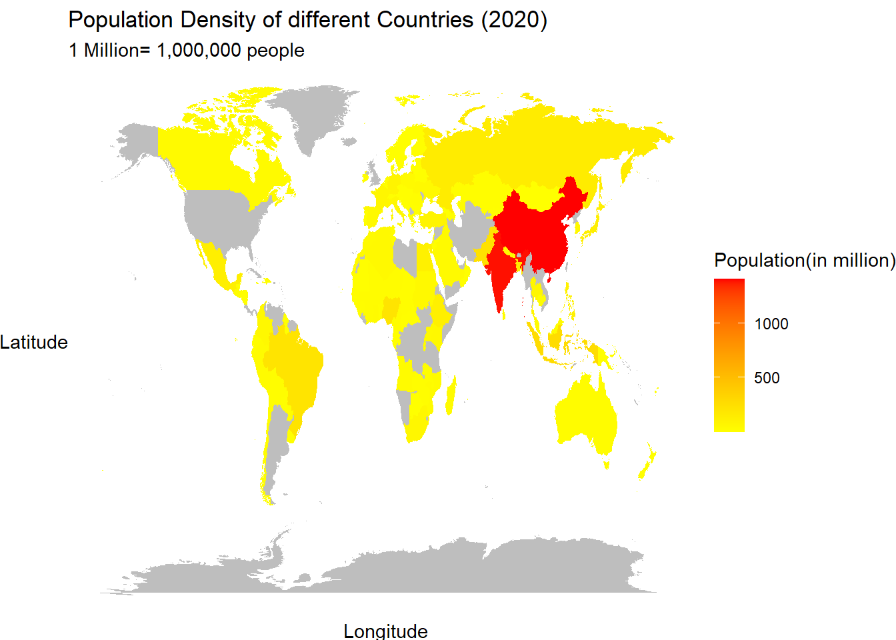
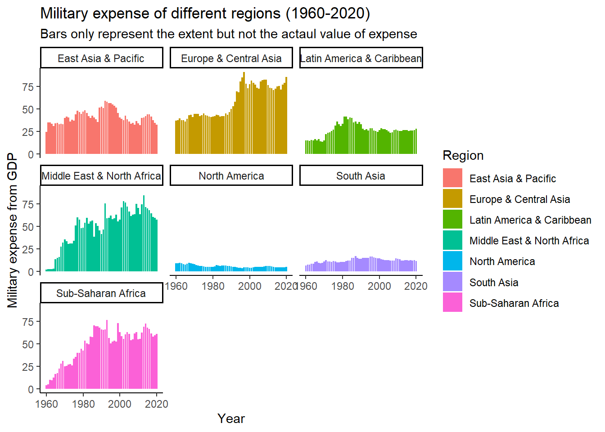

#Filtered the indicator data and selected only the useful columnsi2 =read.csv('unicef_indicator_2.csv') %>%select(country,sex, maternal_value=obs_value,year=time_period,Code = numeric_code,indicator) %>%mutate(sex=recode(sex,"Total"="Female"))
#The map data used to assign regions for better understandingmap_world <-map_data("world") map <- data %>%filter(year==2020) map2020_data <-full_join(map_world,map , by =c("region"="country"))
Heat map on population ,Life expectancy and Maternal mortality of 15-year old girl around the globe
After comparing the heat maps -
Eventhough South -Asian region is densely populated as compared to the whole world
Sub Saharan Africa and has the least human life expectancy and highest maternal deaths among 15- year old females.
Heat map of Life expectancy and maternal deaths showed similar patterns.
ggplot(data = map2020_data) +aes(x = long, y = lat, group = group, fill = population_million) +geom_polygon()+scale_fill_gradient(low ="yellow", high ="red",na.value ="grey") +labs(title ="Population Density of different Countries (2020) ",x ="Longitude",y ="Latitude",fill ="Population(in million)",subtitles="1 Million= 1,000,000 people")+theme_void()+theme(axis.title =element_text())

#map 2 (Life expectancy)ggplot(data = map2020_data) +aes(x = long, y = lat, group = group, fill = Life.expectancy.at.birth..total..years.) +geom_polygon()+scale_fill_gradient(low ="red", high ="yellow",na.value ="grey") +labs(title ="Life expectancy of different countries (2020) ",x ="Longitude",y ="Latitude",fill ="Life expectancy ",subtitle ="Numbers repesent the average age at which a person will die.")+theme_void()+theme(axis.title =element_text())
map_world %>%full_join(i2,by =c("region"="country")) %>%ggplot() +aes(x = long, y = lat, group = group, fill =log(maternal_value)) +geom_polygon()+scale_fill_gradient(low ="red", high ="yellow",na.value ="grey") +labs(title ="Life time risk of a 15-years old girl dying from a Maternal cause (2020) ",x ="Longitude",y ="Latitude",fill ="Number of women (W) ",subtitle ="Numbers represent that 1 out of 'W' 15-years old girl will die due to a maternal cause ")+theme_void()+theme(axis.title =element_text())
compiled_data = data %>%filter(year==2020) %>%full_join(i2)
Joining with `by = join_by(country, year)`
compiled_data
# A tibble: 196 × 18
# Groups: year [1]
country alpha_2_code alpha_3_code numeric_code iso3c year Population..total
<chr> <chr> <chr> <int> <chr> <int> <int>
1 Albania AL ALB 8 ALB 2020 2837849
2 Algeria DZ DZA 12 DZA 2020 43451666
3 Angola AO AGO 24 AGO 2020 33428486
4 Armenia AM ARM 51 ARM 2020 2805608
5 Austral… AU AUS 36 AUS 2020 25655289
6 Austria AT AUT 40 AUT 2020 8916864
7 Azerbai… AZ AZE 31 AZE 2020 10093121
8 Bahrain BH BHR 48 BHR 2020 1477469
9 Banglad… BD BGD 50 BGD 2020 167420951
10 Belarus BY BLR 112 BLR 2020 9379952
# ℹ 186 more rows
# ℹ 11 more variables: GDP.per.capita..constant.2015.US.. <dbl>,
# GNI..current.US.. <dbl>, Inflation..consumer.prices..annual... <dbl>,
# Life.expectancy.at.birth..total..years. <dbl>,
# Military.expenditure....of.GDP. <dbl>, region <chr>,
# population_million <dbl>, sex <chr>, maternal_value <int>, Code <int>,
# indicator <chr>
Time line life expectancy for different regions
Life expectancy increased with increasing year.
data %>%group_by(year, region) %>%summarise(mean =mean(Life.expectancy.at.birth..total..years.)) %>%ggplot(aes(year, mean, color = region)) +geom_line()+labs(title ="Time line of life expectancy of different regions (1960-2020)",subtitles="Average age at which person will die is represented on y axis",x="Year",y="Life expectancy ",color="Region" )+theme_bw() +theme(axis.title =element_text())
`summarise()` has grouped output by 'year'. You can override using the
`.groups` argument.
Scatter plot on Maternal death and life expectancy in relation with GDP
The graph shows there is a direct impact of GDP on the life expectancy and Maternal deaths among 15-year old females .
Europe and central Asian region with highest gdp had the lowest death among female due to meternal cause and high life expectancy.
Sub-Saharan African region with low gdp had the least life expectancy and high meteral death.
Sub-Saharan region followed by Latin america & Caribbean are in the spotlight for this analysis. The reason might be due to the poor health care or it might be the internal conflicts among the people.
compiled_data %>%select(year,region,maternal_value,Life.expectancy.at.birth..total..years.,GDP.per.capita..constant.2015.US..) %>%na.omit() %>%ggplot()+aes(x=log(maternal_value),Life.expectancy.at.birth..total..years.,color=region,size=GDP.per.capita..constant.2015.US..)+geom_point()+labs(title ="Relation between maternal death and life expectancy (2020) ",x =" 'W' ('1/W' female will die due to meternal cause ) ",y =" Life expectancy",color ="Region",subtitle ="Low maternal value and high average life expectancy is considered healthy, ")+theme_bw()+theme(axis.title =element_text())
Y-o-Y Inflation and Military expense for different region around the globe
Inflation over Sub-Saharan African region was roughly constant over the last 5 decades indicating poor economic infrastructure.
Military expense from GDP was was also observed in Sub-Saharan African regions.
Inflation and military expense tells a lot about a country’s economical infrastructure.
data %>%select(year,region,Military.expenditure....of.GDP., Inflation..consumer.prices..annual...) %>%ggplot() +aes(x=year,y=Military.expenditure....of.GDP.,fill=region)+geom_col()+labs(title ="Military expense of different regions (1960-2020)",x ="Year",y ="Military expense from GDP",fill ="Region",subtitles="Bars only represent the extent but not the actaul value of expense")+facet_wrap(~region)+theme_classic()

data %>%select(year,region,Military.expenditure....of.GDP., Inflation..consumer.prices..annual...) %>%ggplot() +aes(x=year,y=log(Inflation..consumer.prices..annual...),fill=region)+geom_col()+labs(title ="Inflation over different regions (1960-2020)",x ="year",y ="Inflation from GDP",fill ="Region",subtitles="Bars only represent the extent but not the actaul value of inflation percentage")+facet_wrap(~region)+theme_classic()
Warning in log(Inflation..consumer.prices..annual...): NaNs produced
Warning in log(Inflation..consumer.prices..annual...): NaNs produced
Relation ship B/W Life expectancy and GNI of Countries
Linear regression line represent a increase in life expectancy with increasing GNI of a country.
data %>%select(GNI..current.US..,Life.expectancy.at.birth..total..years.,region,year,Population..total) %>%ggplot()+aes(x=log(GNI..current.US..), y=Life.expectancy.at.birth..total..years.,color = region,size=Population..total )+geom_point(size=.5,alpha=0.2)+geom_smooth(alpha=0.5,color="black",size=0.4)+facet_wrap(~region)+labs(title ="Impact of GNI on life expectancy of different regions (1960-2020)",x="GNI ",y="Life expectancy ",color="Region" ,subtitles="Bars only represent the extent but not the actaul value of expense")+theme_classic() +theme(axis.title =element_text())
Warning: Using `size` aesthetic for lines was deprecated in ggplot2 3.4.0.
ℹ Please use `linewidth` instead.
`geom_smooth()` using method = 'gam' and formula = 'y ~ s(x, bs = "cs")'
This report concludes to the fact that GDP, Inflation,GNI greatly impact the average age at which a person will die and the maternal death among the 15-Year old females around the world.
North east countries are in a good state compare to the South American and African regions. Lack to common healthcare and disputes among the states in addition to inflation make it so difficult to afford basic services.
Sub-Saharan are in the most docile and poor state compared to the whole world which should be a global concern and should be focused on.